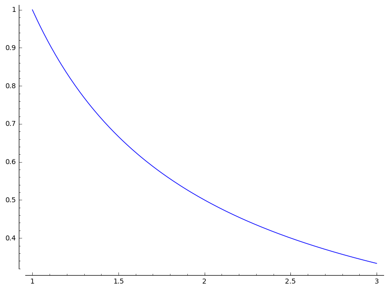

1 Accumulation and Area
1.1 Solution 1
1.1.1 Solution a
Let's solve this using SageMath. Let's save the data in python dictionary:
monday = {'3am': 531, '9am': 603, '3pm': 625, '9pm': 527} tuesday = {'3am': 475, '9am': 527, '3pm': 548, '9pm': 491} wednesday = {'3am': 466, '9am': 511, '3pm': 539, '9pm': 510} thursday = {'3am': 502, '9am': 556, '3pm': 599, '9pm': 584} friday = {'3am': 586, '9am': 661, '3pm': 728, '9pm': 712} days = [monday, tuesday, wednesday, thursday, friday]
We need to compute Riemann 5-sum using the 3 p.m measurement each day.
\(\sum_{i=1}^5 f(t^{*}_i) \Delta t\)
We know that \(\Delta t\) is \(24\) The total time interval is \((5*24 = 120)\). Let's compute the sum via SageMath:
total_flows = map(lambda x: x['3pm'] * 24, days) total_flows sum(total_flows)
[15000, 13152, 12936, 14376, 17472] 72936
So the Riemann 5-sum using the 3 p.m measurement each day is \(72936\) cubic meters.
1.1.2 Solution b
We need to compute Riemann 10-sum using the 9 am and 9pm measurements each day.
\(\sum_{i=1}^5 f(t^{*}_i) \Delta t\)
The difference between 9 am and 9 pm is 12 hours. So \(\Delta t\) is 12 hours in this case. Let's compute the result via SageMath:
total_flows = map(lambda x: x['9am']*12 + x['9pm']*12, days) total_flows sum(total_flows)
[13560, 12216, 12252, 13680, 16476] 68184
So the Riemann 10-sum using the 9 am and 9pm measurements each day is \(68184\) cubic meters.
1.2 Solution 2
- Wire is 10 centimeter.
- Density in \(g/cm\) at point \(x\) centimeters from one end of the wire is given by the function \(h(x)\)
- Suppose the density is measured at 1 centimeter intervals, these are the readings:
h = piecewise([ ([0,0], 2), ((0,1), 2), ([1, 1], 4), ((1,2), 4), ([2, 2], 3), ((2,3), 3), ([3, 3], 4), ((3,4), 4), ([4, 4], 4), ((4,5), 4), ([5, 5], 5), ((5,6), 5), ([6, 6], 4), ((6,7), 4), ([7, 7], 3), ((7,8), 3), ([8, 8], 3), ((8,9), 3), ([9, 9], 2), ((9,10), 2), ([10, 10], 1), ((10, 11), 1) ])
1.2.1 Solution a
- We need to compute Riemann 5-sum using the midpoint of each interval.
- We know that there are 10 intervals:
intervals = range(0, 11) intervals
[0, 1, 2, 3, 4, 5, 6, 7, 8, 9, 10]
- Let's compute midpoint of each interval:
midpoints = [] for i in range(0, len(intervals)-1): midpoints.append([intervals[i], intervals[i+1]]) midpoints points = map(lambda x: (x[0] + x[1])/2, midpoints) points
[[0, 1],
[1, 2],
[2, 3],
[3, 4],
[4, 5],
[5, 6],
[6, 7],
[7, 8],
[8, 9],
[9, 10]]
[1/2, 3/2, 5/2, 7/2, 9/2, 11/2, 13/2, 15/2, 17/2, 19/2]
Now let's compute the Riemann 5-sum:
sum(map(lambda x: h(x)*1, points)) # 1 is the delta interval
34
1.2.2 Solution b
- We need to compute Riemann 10-sum
- We need to use left endpoint of each as interval as the sample point: So this will start from 0 but will not include 10 since it won't be part of the left endpoint.
intervals = range(0, 10) intervals
[0, 1, 2, 3, 4, 5, 6, 7, 8, 9]
Let's compute the Riemann 10-sum of the the function:
sum(map(lambda x: h(x)*1, intervals))
34
1.2.3 Solution c
- We need to compute Riemann 10-sum
- We need to use the right endpoint of each interval: So this will start from 1 as the number 0 isn't part of right endpoint.
intervals = range(1, 11) intervals
[1, 2, 3, 4, 5, 6, 7, 8, 9, 10]
Let's compute the Riemann 10-sum of the the function:
sum(map(lambda x: h(x)*1, intervals))
33
1.3 Solution 3
- \(g(t)\) : Number of killowatts of power being drawn from the electrical grid at time \(t\)
- \(g(t) = 2t - 30\)
- We need to estimate the number of kilowatt hours of electrical energy taken from the grid between the time interval from \(t=12\) to \(t=24\).
t = var('t') g = 2*t - 30 g
2*t - 30
1.3.1 Solution a
- We need to compute a Riemann 6-sum using midpoint of each interval as the sample point.
intervals = range(12, 25) intervals
[12, 13, 14, 15, 16, 17, 18, 19, 20, 21, 22, 23, 24]
Since it's going to be a Riemann 6-sum:
intervals = range(12, 25, 2) intervals
[12, 14, 16, 18, 20, 22, 24]
Now we need to calculate the midpoint of above interval:
midpoints = [] for i in range(0, len(intervals)-1): midpoints.append([intervals[i], intervals[i+1]]) midpoints points = map(lambda x: (x[0] + x[1])/2, midpoints) points sum(map(lambda x: g(x)*2, points))
[[12, 14], [14, 16], [16, 18], [18, 20], [20, 22], [22, 24]] [13, 15, 17, 19, 21, 23] /usr/share/sagemath/bin/sage-ipython:10: DeprecationWarning: Substitution using function-call syntax and unnamed arguments is deprecated and will be removed from a future release of Sage; you can use named arguments instead, like EXPR(x=..., y=...) See http://trac.sagemath.org/5930 for details. app.initialize() 72
So the Riemann 6-sum using midpoint of each interval as the sample point is 72 kwh.
1.3.2 Solution b
- We need to compute a Riemann 12-sum using the right endpoint of each interval as the sample point.
- Since it's right endpoint, it won't include the initial value 12.
intervals = range(13, 25) intervals
[13, 14, 15, 16, 17, 18, 19, 20, 21, 22, 23, 24]
Let's compute the Riemann 12-sum:
sum(map(lambda x: g(x)*1, intervals))
/usr/share/sagemath/bin/sage-ipython:2: DeprecationWarning: Substitution using function-call syntax and unnamed arguments is deprecated and will be removed from a future release of Sage; you can use named arguments instead, like EXPR(x=..., y=...) See http://trac.sagemath.org/5930 for details. # -*- coding: utf-8 -*- 84
So, 84 KwH is the Riemann 12-sum of the function using the right endpoint of each interval.
1.4 Solution 4
x = var('x') f = 6 - 2*x
1.4.1 Solution a
plot(f, 0, 3)
1.4.2 Solution b
- Compute Riemann 6-sum for \([0,3]\)
- Use right endpoint of each interval as the sample point.
- Since it's right endpoint, we can ignore 0 in the interval.
intervals = [0.5] for i in range(5): intervals.append(intervals[i] + 0.5) intervals
[0.500000000000000, 1.00000000000000, 1.50000000000000, 2.00000000000000, 2.50000000000000, 3.00000000000000]
Let's compute the Riemann 6-sum:
sum(map(lambda x: f(x) * 0.5, intervals))
/usr/share/sagemath/bin/sage-ipython:2: DeprecationWarning: Substitution using function-call syntax and unnamed arguments is deprecated and will be removed from a future release of Sage; you can use named arguments instead, like EXPR(x=..., y=...) See http://trac.sagemath.org/5930 for details. # -*- coding: utf-8 -*- 7.50000000000000
So 7.5 is the Riemann 6-sum of the graph \(f\).
1.4.3 Solution c
- Looking at the graph we can see that it's a right angled triangle.
- So we can compute it's area easily using Sagemath:
area = 6*3/2 area
9
1.5 Solution 5
x = var('x') f = 1/x f
1/x
1.5.1 Solution a
plot(f,1,3)

1.5.2 Solution b
- Compute Riemann 10-sum for \([1,3]\)
- Use the midpoint of each interval as the sample point
Let's compute the intervals:
intervals = [1] for i in range(10): intervals.append(intervals[i] + 0.2) intervals
[1,
1.20000000000000,
1.40000000000000,
1.60000000000000,
1.80000000000000,
2.00000000000000,
2.20000000000000,
2.40000000000000,
2.60000000000000,
2.80000000000000,
3.00000000000000]
Now we need to calculate the midpoint of above interval:
midpoints = [] for i in range(0, len(intervals)-1): midpoints.append([intervals[i], intervals[i+1]]) midpoints points = map(lambda x: (x[0] + x[1])/2, midpoints) points sum(map(lambda x: f(x)*0.2, points))
[[1, 1.20000000000000],
[1.20000000000000, 1.40000000000000],
[1.40000000000000, 1.60000000000000],
[1.60000000000000, 1.80000000000000],
[1.80000000000000, 2.00000000000000],
[2.00000000000000, 2.20000000000000],
[2.20000000000000, 2.40000000000000],
[2.40000000000000, 2.60000000000000],
[2.60000000000000, 2.80000000000000],
[2.80000000000000, 3.00000000000000]]
[1.10000000000000,
1.30000000000000,
1.50000000000000,
1.70000000000000,
1.90000000000000,
2.10000000000000,
2.30000000000000,
2.50000000000000,
2.70000000000000,
2.90000000000000]
/usr/share/sagemath/bin/sage-ipython:10: DeprecationWarning: Substitution using function-call syntax and unnamed arguments is deprecated and will be removed from a future release of Sage; you can use named arguments instead, like EXPR(x=..., y=...)
See http://trac.sagemath.org/5930 for details.
app.initialize()
1.09714209400861
So the Riemann 10-sum of the function is \(1.09714\)
1.6 Solution 6
1.6.1 Solution a
- We need to find a function \(f\) such that it's graph is top half of the circle \(x^2 + y^2 = 1\)
- It should be easy to derive it from the equation of circle itself:
Let's assume \(y\) as \(f\) in the equation of circle. So, the function \(f\) is:
x = var('x') f = sqrt(1-(x^2)) f
sqrt(-x^2 + 1)
Infact, let's graph it and verify to see:
plot(f, -1, 1)
1.6.2 Solution b
- Compute Riemann 10-sum for \(f\) on the interval \([-1,1]\) to estimate the area under the graph of \(f\).
- Use midpoint of each interval as the sample point.
Let's compute the intervals:
intervals = [-1] for i in range(10): intervals.append(intervals[i] + 0.2) intervals
[-1,
-0.800000000000000,
-0.600000000000000,
-0.400000000000000,
-0.200000000000000,
-5.55111512312578e-17,
0.200000000000000,
0.400000000000000,
0.600000000000000,
0.800000000000000,
1.00000000000000]
Now we need to calculate the midpoint of above interval:
midpoints = [] for i in range(0, len(intervals)-1): midpoints.append([intervals[i], intervals[i+1]]) midpoints points = map(lambda x: (x[0] + x[1])/2, midpoints) points sum(map(lambda x: f(x)*0.2, points))
[[-1, -0.800000000000000],
[-0.800000000000000, -0.600000000000000],
[-0.600000000000000, -0.400000000000000],
[-0.400000000000000, -0.200000000000000],
[-0.200000000000000, -5.55111512312578e-17],
[-5.55111512312578e-17, 0.200000000000000],
[0.200000000000000, 0.400000000000000],
[0.400000000000000, 0.600000000000000],
[0.600000000000000, 0.800000000000000],
[0.800000000000000, 1.00000000000000]]
[-0.900000000000000,
-0.700000000000000,
-0.500000000000000,
-0.300000000000000,
-0.100000000000000,
0.100000000000000,
0.300000000000000,
0.500000000000000,
0.700000000000000,
0.900000000000000]
/usr/share/sagemath/bin/sage-ipython:10: DeprecationWarning: Substitution using function-call syntax and unnamed arguments is deprecated and will be removed from a future release of Sage; you can use named arguments instead, like EXPR(x=..., y=...)
See http://trac.sagemath.org/5930 for details.
app.initialize()
1.58599391180654
So the estimated area is \(1.58599391180654\).
1.6.3 Solution c
- We know that the area of circle is \(\pi * r^2\)
- In our case the radius is \(1\), so the area is \(\pi\).
- But since we have half of the circle, the area is \(\dfrac{\pi}{2}\)
Let's multiply our answer in (b) to get an estimate of \(\pi\):
1.58599391180654 * 2
3.17198782361308
And the above result is close to \(\pi\)
n(pi)
3.14159265358979
1.7 Solution 7
- t: t minutes after noon
- f(t): 5 + 2t
- f(t): leaking rate of water from a water tank in gallons per minute.
- We need to use Riemann 10-sum to estimate the amount of water leaked from 20 minutes to noon.
t = var('t') f = 5 + (2*t) f
2*t + 5
Let's calculate Riemann 10-sum for the interval \([0,20]\) for the above function \(f\)
intervals = range(0, 22, 2) intervals
[0, 2, 4, 6, 8, 10, 12, 14, 16, 18, 20]
The time delta or the interval is \(2\) minutes. Let's compute the Riemann 10-sum using the mid-point of each interval as the sample point:
midpoints = [] for i in range(0, len(intervals)-1): midpoints.append([intervals[i], intervals[i+1]]) midpoints points = map(lambda x: (x[0] + x[1])/2, midpoints) points sum(map(lambda x: f(x)*2, points))
[[0, 2],
[2, 4],
[4, 6],
[6, 8],
[8, 10],
[10, 12],
[12, 14],
[14, 16],
[16, 18],
[18, 20]]
[1, 3, 5, 7, 9, 11, 13, 15, 17, 19]
/usr/share/sagemath/bin/sage-ipython:10: DeprecationWarning: Substitution using function-call syntax and unnamed arguments is deprecated and will be removed from a future release of Sage; you can use named arguments instead, like EXPR(x=..., y=...)
See http://trac.sagemath.org/5930 for details.
app.initialize()
500
Let's check if it's the left endpoint instead:
intervals[:-1] sum(map(lambda x: f(x)*2, intervals[:-1]))
[0, 2, 4, 6, 8, 10, 12, 14, 16, 18] /usr/share/sagemath/bin/sage-ipython:3: DeprecationWarning: Substitution using function-call syntax and unnamed arguments is deprecated and will be removed from a future release of Sage; you can use named arguments instead, like EXPR(x=..., y=...) See http://trac.sagemath.org/5930 for details. """ 460
So using left endpoint we are getting different value.
So 500 gallons of water has leaked out of the tank from nooon until 20 minutes past noon if we using the mid-point as the sample point.
1.8 Solution 8
- t: t hours past midnight
- \(6 \leq t \leq 18\)
- f(t): Total watts of electricity generated
- \(f(t) = 100\sin((t-6)*\dfrac{\pi}{12})\)
- We need to use Riemann 12-sum to estimate the amount of electrical engergy generatd beteen 6 a.m and 6 p.m.
- Total time span between 6 a.m and 6 p.m is 12 hours.
- The time interval for Riemann 12-sum is one hour.
x = var('x') f = 100 * sin((t-6)* (pi)/12) f
100*sin(-1/2*pi + 1/12*pi*t)
Let's compute the intervals:
intervals = range(0, 13) intervals
[0, 1, 2, 3, 4, 5, 6, 7, 8, 9, 10, 11, 12]
Let's compute the Riemann 12-sum using the mid-point of each interval as the sample point:
midpoints = [] for i in range(0, len(intervals)-1): midpoints.append([intervals[i], intervals[i+1]]) midpoints points = map(lambda x: (x[0] + x[1])/2, midpoints) points power = map(lambda x: f(x)*1, points) sum(power)
[[0, 1],
[1, 2],
[2, 3],
[3, 4],
[4, 5],
[5, 6],
[6, 7],
[7, 8],
[8, 9],
[9, 10],
[10, 11],
[11, 12]]
[1/2, 3/2, 5/2, 7/2, 9/2, 11/2, 13/2, 15/2, 17/2, 19/2, 21/2, 23/2]
/usr/share/sagemath/bin/sage-ipython:10: DeprecationWarning: Substitution using function-call syntax and unnamed arguments is deprecated and will be removed from a future release of Sage; you can use named arguments instead, like EXPR(x=..., y=...)
See http://trac.sagemath.org/5930 for details.
app.initialize()
0
So it doesn't seem to generated any electrical energy. I guess it seems to take the power from the electrical grid for some time and for some time it seem to generate it.
1.9 Solution 9
- Velocity is measured once every 5 seconds for one minute.
- Velocity unit is ft/sec
- \(v(t)\) is velocity of the car in t seconds after the beginning of the test.
- We need to use Riemann 12-sum to estimate the total distance traveled by the car.
Let's use piecewise function to formalize the veleocity observed:
t = var('t') v = piecewise([ ([0,0], 0), ((0,5), 0), ([5, 5], 40), ((5, 10), 40), ([10, 10], 75), ((10, 15), 75), ([15, 15], 90), ((15, 20), 90), ([20, 20], 95), ((20, 25), 95), ([25, 25], 90), ((25, 30), 90), ([30, 30], 80), ((30, 35), 80), ([35, 35], 75), ((35, 40), 75), ([40, 40], 80), ((40, 45), 80), ([45, 45], 85), ((45, 50), 85), ([50, 50], 60), ((50, 55), 60), ([55, 55], 25), ((55, 60), 25), ([60, 60], 0), ((60, 65), 0) ])
- We need to compute distance. We know that velocity multiplied by the seconds will give the distance.
- The time delta for Riemann 12-sum is 5 seconds (60/12). Let's compute the intervals:
intervals = range(0, 65, 5) intervals
[0, 5, 10, 15, 20, 25, 30, 35, 40, 45, 50, 55, 60]
Now let's compute the Riemann 12-sum:
sum(map(lambda x: v(x)*5, intervals))
3975
So the total distance traveled by the car is \(3975\) feet as estimated by the Riemann 12-sum.